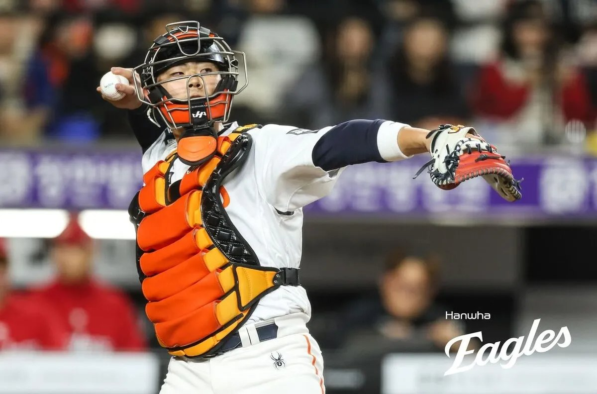
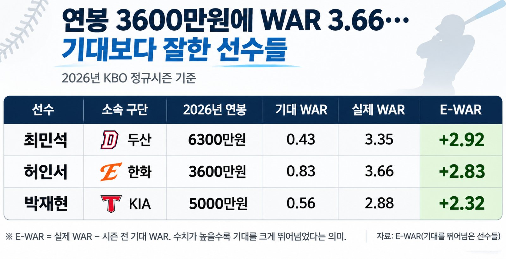

[E-WAR] 3600만원 연봉에 3.66승 기여…몸값 뛰어넘은 선수들

연봉 3600만원을 받는 선수가 기대보다 훨씬 좋은 성적을 거뒀다면, 내년 연봉은 얼마나 올라야 할까요?
반대로 수억원을 받는 선수가 기대에 크게 못 미쳤다면 어떻게 평가해야 할까요?
2026년 KBO 시즌이 끝났습니다. 이제 선수와 구단은 새로운 시즌을 준비하면서 연봉 협상에 들어갑니다.
제가 만든 야구 데이터 서비스 E-WAR(기대를 뛰어넘은 선수들)를 활용해 올해 선수들의 연봉과 성적을 비교해 봤습니다.
먼저 몸값이 비싼 선수들이 제값을 했는지 살펴봤습니다.
10개 구단에서 연봉 상위 5명(동률 포함)을 추려 외국인 선수를 제외한 뒤, E-WAR를 계산할 수 있는 선수 49명을 분석했습니다.
이들의 평균 기대 WAR는 2.05, 실제 WAR는 2.11이었습니다. 기대 대비 성적을 나타내는 E-WAR는 +0.06이었습니다.
고액 연봉 선수들이 전체적으로 기대에 거의 부응했다는 의미입니다.
흥미로운 것은 최근 3년간의 변화입니다. 연봉 상위 선수들의 평균 E-WAR는 2024년 -0.57에서 2025년 +0.01, 올해 +0.06으로 개선됐습니다.
그렇다면 상대적으로 연봉이 적은 선수들은 어땠을까요?
올해 한화 허인서의 연봉은 3600만원이었습니다. 기대 WAR는 0.83이었지만 실제 WAR는 3.66을 기록했습니다. E-WAR는 +2.83으로 전체 11위였습니다.
두산 최민석도 눈에 띕니다. 연봉은 6300만원이었지만 기대 WAR 0.43에 실제 WAR 3.35를 기록했습니다. E-WAR는 +2.92였습니다.
KIA 박재현은 연봉 5000만원에 기대 WAR 0.56, 실제 WAR 2.88로 E-WAR +2.32를 기록했습니다.
그런데 이 선수들의 내년 연봉은 얼마나 올라야 할까요?
이런 궁금증에서 E-WAR에 '협상 도우미'라는 기능을 추가했습니다.
선수 이름을 검색하면 올해 실제 성적과 기대 성적은 물론 2027년 기대 WAR까지 보여줍니다. 여기에 선수(에이전트) 측이 연봉 인상을 요구할 때 내세울 수 있는 논거와 구단이 제시할 법한 반론을 각각 정리해 줍니다.
실제 WAR가 비슷한 선수들의 성적과 연봉도 비교할 수 있습니다.

허인서를 사례로 살펴봤습니다.
허인서가 협상 테이블에서 내세울 수 있는 가장 강력한 근거는 올해 기대 WAR를 2.83이나 뛰어넘었다는 점입니다.
실제 WAR가 허인서와 비슷한 타자 11명 가운데 허인서보다 E-WAR가 높은 선수는 1명뿐이었습니다.
연봉 차이는 더 흥미롭습니다.
비교 선수 중 연봉을 확인할 수 있는 10명의 2026년 연봉 중앙값은 3억7500만원이었습니다. 허인서의 연봉 3600만원과 상당한 차이가 있습니다.
선수 입장에서는 비슷한 성적을 거둔 선수들과 비교해 자신의 연봉이 낮다는 점을 협상 논거로 제시할 수 있습니다.
그렇다면 구단은 어떻게 반박할까요?
올해의 뛰어난 성적이 내년에도 그대로 이어진다는 보장은 없다는 점입니다.
E-WAR가 추정한 허인서의 2027년 기대 WAR는 2.57입니다. 올해 실제 WAR 3.66보다는 낮습니다.
올해 활약을 높이 평가하더라도 그 성적이 반복될 것이라고 가정해 연봉을 결정할 수는 없다는 논리입니다.
이렇게 선수와 구단이 같은 기록을 놓고도 서로 다른 해석을 내놓을 수 있습니다.
물론 비교 선수들의 연봉이 곧 적정 연봉을 뜻하지는 않습니다. FA 다년계약이나 선수의 경력, 계약 구조 등에 따라 같은 성적을 거두더라도 연봉은 달라질 수 있기 때문입니다.
협상 도우미는 적정 연봉을 정답처럼 제시하는 대신, 양측이 활용할 수 있는 객관적인 비교 자료를 제공합니다.
E-WAR 협상 도우미
https://raspos.github.io/e-war/#/negotiate
그렇다면 연봉과 실제 성적은 얼마나 밀접한 관계가 있을까요?
2026년 국내 선수 240명을 분석한 결과, 연봉과 실제 WAR의 상관계수는 0.38이었습니다. 반면 연봉과 시즌 전 기대 WAR의 상관계수는 0.57로 더 높았습니다.
올해 거둔 성적보다 시즌 전에 예상했던 성적이 연봉과 더 밀접한 관계를 보인 것입니다.
생각해 보면 자연스러운 결과입니다. 올해 연봉은 올해 성적이 나오기 전에 정해졌기 때문입니다.
그러나 시즌이 끝난 지금은 다릅니다.
올해의 실제 성적은 내년 기대치를 결정하는 새로운 정보가 됩니다. 구단은 그 성적이 얼마나 지속될지 판단해야 하고, 선수는 자신의 활약이 얼마나 높은 평가를 받아야 하는지 설명해야 합니다.
E-WAR의 협상 도우미는 바로 이 과정에서 활용할 수 있는 자료를 만들기 위해 개발했습니다.
단순히 WAR가 높은 선수를 찾는 데 그치지 않고, 올해 기대를 뛰어넘은 성적이 어떤 의미인지, 비슷한 성적을 거둔 선수들은 어떤 평가를 받고 있는지, 내년에는 어느 정도의 성적을 기대할 수 있는지를 함께 살펴보는 것입니다.
이렇게 세 차례에 걸쳐 2026년 KBO 시즌을 E-WAR로 결산했습니다.
1회에서는 삼성의 한국시리즈 우승을 기대와 실제 성적이라는 관점에서 살펴봤습니다. 2회에서는 올해 가장 기대를 크게 뛰어넘은 선수들을 찾았습니다. 그리고 마지막으로 선수들의 연봉과 기대 대비 성과를 비교했습니다.
내년에는 시즌이 시작되기 전에 10개 구단과 선수들의 기대 WAR를 공개하고, 시즌이 진행되는 동안 실제 성적과 비교해 보고 싶습니다.
그리고 E-WAR의 협상 도우미가 실제 연봉 협상에서도 참고할 만한 자료가 된다면 더 의미 있을 것 같습니다.
야구는 기록의 스포츠입니다. 하지만 같은 기록도 어떤 기준으로 바라보느냐에 따라 다른 이야기가 나올 수 있습니다.
E-WAR는 그 기록에 '기대'라는 기준을 하나 더해 보려는 시도입니다.